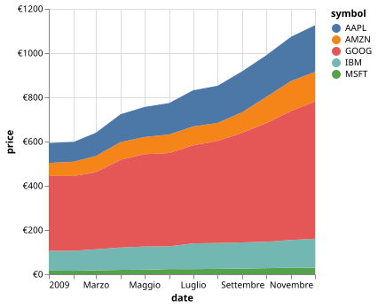

Customizing Visualizations#
Altair’s goal is to automatically choose useful plot settings and configurations so that the user is free to think about the data rather than the mechanics of plotting. That said, once you have a useful visualization, you will often want to adjust certain aspects of it. This section of the documentation outlines some of the ways to make these adjustments.
Global Config vs. Local Config vs. Encoding#
There are often two or three different ways to specify the look of your plots
depending on the situation.
For example, suppose we are creating a scatter plot of the cars dataset:
import altair as alt
from altair.datasets import data
cars = data.cars.url
alt.Chart(cars).mark_point().encode(
x='Acceleration:Q',
y='Horsepower:Q'
)
Suppose you wish to change the color of the points to red, and the opacity of the points to 20%. There are three possible approaches to these:
“Global Config” acts on an entire chart object
“Local Config” acts on one mark of the chart
“Encoding” channels can also be used to set some chart properties
Global Config#
First, every chart type has a "config" property at the top level that acts
as a sort of theme for the whole chart and all of its sub-charts.
Here you can specify things like axes properties, mark properties, selection
properties, and more.
Altair allows you to access these through the configure_* methods of the
chart. Here we will use the configure_mark() property:
alt.Chart(cars).mark_point().encode(
x='Acceleration:Q',
y='Horsepower:Q'
).configure_mark(
opacity=0.2,
color='red'
)
There are a couple things to be aware of when using this kind of global configuration:
By design configurations will affect every mark used within the chart
The global configuration is only permissible at the top-level; so, for example, if you tried to layer the above chart with another, it would result in an error.
For a full discussion of global configuration options, see Top-Level Chart Configuration.
Local Config#
If you would like to configure the look of the mark locally, such that the setting only affects the particular chart property you reference, this can be done via a local configuration setting.
In the case of mark properties, the best approach is to set the property as an
argument to the mark_* method. Here we will use mark_point():
alt.Chart(cars).mark_point(opacity=0.2, color='red').encode(
x='Acceleration:Q',
y='Horsepower:Q'
)
Unlike when using the global configuration, here it is possible to use the resulting chart as a layer or facet in a compound chart.
Local config settings like this one will always override global settings.
Encoding#
Finally, it is possible to set chart properties via the encoding channel
(see Encodings). Rather than mapping a property to a data column,
you can map a property directly to a value using the value() function:
alt.Chart(cars).mark_point().encode(
x='Acceleration:Q',
y='Horsepower:Q',
opacity=alt.value(0.2),
color=alt.value('red')
)
Note that only a limited set of mark properties can be bound to encodings, so
for some (e.g. fillOpacity, strokeOpacity, etc.) the encoding approach
is not available.
Encoding settings will always override local or global configuration settings.
Which to Use?#
The precedence order for the three approaches is (from lowest to highest) global config, local config, encoding. That is, if a chart property is set both globally and locally, the local setting will win-out. If a property is set both via a configuration and an encoding, the encoding will win-out.
In most usage, we recommend always using the highest-precedence means of setting properties; i.e. an encoding, or a local configuration for properties that are not tied to an encoding. Global configurations should be reserved for creating themes that are applied just before the chart is rendered.
Adjusting the Title#
By default an Altair chart does not have a title, as seen in this example.
import altair as alt
from altair.datasets import data
iowa = data.iowa_electricity.url
alt.Chart(iowa).mark_area().encode(
x="year:T",
y=alt.Y("net_generation:Q").stack("normalize"),
color="source:N"
)
You can add a simple title by passing the title keyword argument with the data.
alt.Chart(iowa, title="Iowa's green energy boom").mark_area().encode(
x="year:T",
y=alt.Y("net_generation:Q").stack("normalize"),
color="source:N"
)
It is also possible to add a subtitle by passing in an alt.Title object.
alt.Chart(
iowa,
title=alt.Title(
"Iowa's green energy boom",
subtitle="A growing share of the state's energy has come from renewable sources"
)
).mark_area().encode(
x="year:T",
y=alt.Y("net_generation:Q").stack("normalize"),
color="source:N"
)
The subtitle can run to two lines by passing a list where each list item is a line (if you don’t want to create this list manually as in the example below, you can use the wrap function from the textwrap library to split a string into a list of substrings of a certain length).
alt.Chart(
iowa,
title=alt.Title(
"Iowa's green energy boom",
subtitle=["A growing share of the state's energy", "has come from renewable sources"]
)
).mark_area().encode(
x="year:T",
y=alt.Y("net_generation:Q").stack("normalize"),
color="source:N"
)
The Title object can also configure a number of other attributes,
e.g., to anchor it to the 'start' (left) of the chart,
and to orient it at the 'bottom' of the chart (see Top-Level Chart Configuration for more options).
alt.Chart(
iowa,
title=alt.Title(
"Iowa's green energy boom",
subtitle="A growing share of the state's energy has come from renewable sources",
anchor='start',
orient='bottom',
offset=20
)
).mark_area().encode(
x="year:T",
y=alt.Y("net_generation:Q").stack("normalize"),
color="source:N"
)
In the chart above,
you can see that the title is positioned all the way to the left,
so that it lines up with the label on the y-axis.
You can align the title to the axis line instead
by setting the reference frame for the anchor position
to be relative to the 'group' (i.e. the data portion of the chart, excluding labels and titles).
alt.Chart(
iowa,
title=alt.Title(
"Iowa's green energy boom",
subtitle=["A growing share of the state's energy has come from", "renewable sources"],
anchor='start',
frame='group',
orient='bottom',
offset=20
)
).mark_area().encode(
x="year:T",
y=alt.Y("net_generation:Q").stack("normalize"),
color="source:N"
)
Adjusting Axis Limits#
The default axis limit used by Altair is dependent on the type of the data.
To fine-tune the axis limits beyond these defaults, you can use the
scale() method of the axis encodings. For example, consider the
following plot:
import altair as alt
from altair.datasets import data
cars = data.cars.url
alt.Chart(cars).mark_point().encode(
x='Acceleration:Q',
y='Horsepower:Q'
)
Altair inherits from Vega-Lite the convention of always including the zero-point
in quantitative axes; if you would like to turn this off, you can add the
scale() method to the X encoding that specifies zero=False:
alt.Chart(cars).mark_point().encode(
alt.X('Acceleration:Q').scale(zero=False),
y='Horsepower:Q'
)
To specify exact axis limits, you can use the domain property of the scale:
alt.Chart(cars).mark_point().encode(
alt.X('Acceleration:Q').scale(domain=(5, 20)),
y='Horsepower:Q'
)
The problem is that the data still exists beyond the scale, and we need to tell
Altair what to do with this data. One option is to “clip” the data by setting
the "clip" property of the mark to True:
alt.Chart(cars).mark_point(clip=True).encode(
alt.X('Acceleration:Q').scale(domain=(5, 20)),
y='Horsepower:Q'
)
Another option is to “clamp” the data; that is, to move points beyond the limit to the edge of the domain:
alt.Chart(cars).mark_point().encode(
alt.X('Acceleration:Q').scale(domain=(5, 20), clamp=True),
y='Horsepower:Q'
).interactive()
For interactive charts like the one above, the clamping happens dynamically, which can be useful for keeping in mind outliers as you pan and zoom on the chart.
Adjusting Axis Labels#
Altair also gives you tools to easily configure the appearance of axis labels. For example consider this plot:
import pandas as pd
df = pd.DataFrame(
{'x': [0.03, 0.04, 0.05, 0.12, 0.07, 0.15],
'y': [10, 35, 39, 50, 24, 35]
})
alt.Chart(df).mark_circle().encode(
x='x',
y='y'
)
To fine-tune the formatting of the tick labels and to add a custom title to
each axis, we can pass to the X and Y encoding a custom
axis definition within the axis() method.
Here is an example of formatting the x labels as a percentage, and
the y labels as a dollar value:
alt.Chart(df).mark_circle().encode(
alt.X('x').axis(format='%').title('percentage'),
alt.Y('y').axis(format='$').title('dollar amount')
)
Axis labels can be easily removed:
alt.Chart(df).mark_circle().encode(
alt.X('x').axis(labels=False),
alt.Y('y').axis(labels=False)
)
Axis title can also be rotated:
alt.Chart(df).mark_circle().encode(
alt.X('x').axis(title="x"),
alt.Y('y').axis(
title="Y Axis Title",
titleAngle=0,
titleAlign="left",
titleY=-2,
titleX=0,
)
)
Additional formatting codes are available; for a listing of these see the d3 Format Code Documentation.
Adjusting the Legend#
A legend is added to the chart automatically when the color, shape or size arguments are passed to the encode() function. In this example we’ll use color.
import altair as alt
from altair.datasets import data
cars = data.cars()
alt.Chart(cars).mark_point().encode(
x='Horsepower:Q',
y='Miles_per_Gallon:Q',
color='Origin:N'
)
In this case, the legend can be customized by introducing the Color class and taking advantage of its legend() method. The shape and size arguments have their own corresponding classes.
The legend option on all of them expects a Legend object as its input, which accepts arguments to customize many aspects of its appearance. One example is to move the legend to another position with the orient argument.
import altair as alt
from altair.datasets import data
cars = data.cars()
alt.Chart(cars).mark_point().encode(
x='Horsepower:Q',
y='Miles_per_Gallon:Q',
color=alt.Color('Origin:N').legend(orient="left")
)
Another thing you can do is set a title; in this case we can use the title() method directly as a shortcut or specify the title parameter inside the legend() method:.
import altair as alt
from altair.datasets import data
cars = data.cars()
alt.Chart(cars).mark_point().encode(
x='Horsepower:Q',
y='Miles_per_Gallon:Q',
color=alt.Color('Origin:N').title("Origin")
)
You can remove the legend entirely by submitting a null value.
import altair as alt
from altair.datasets import data
cars = data.cars()
alt.Chart(cars).mark_point().encode(
x='Horsepower:Q',
y='Miles_per_Gallon:Q',
color=alt.Color('Origin:N').legend(None),
)
Removing the Chart Border#
Basic Altair charts are drawn with both a grid and an outside border. To create a chart with no border, you will need to remove them both.
As an example, let’s start with a simple scatter plot.
import altair as alt
from altair.datasets import data
cars = data.cars()
alt.Chart(cars).mark_point().encode(
x='Horsepower:Q',
y='Miles_per_Gallon:Q',
color='Origin:N'
)
First remove the grid using the configure_axis() method.
import altair as alt
from altair.datasets import data
cars = data.cars()
alt.Chart(cars).mark_point().encode(
x='Horsepower:Q',
y='Miles_per_Gallon:Q',
color='Origin:N'
).configure_axis(
grid=False
)
You’ll note that while the inside rules are gone, the outside border remains.
Hide it by setting stroke=None inside configure_view()
(strokeWidth=0 and strokeOpacity=0 also works):
import altair as alt
from altair.datasets import data
cars = data.cars()
alt.Chart(cars).mark_point().encode(
x='Horsepower:Q',
y='Miles_per_Gallon:Q',
color='Origin:N'
).configure_axis(
grid=False
).configure_view(
stroke=None
)
It is also possible to completely remove all borders and axes by
combining the above option with setting axis to None during encoding.
import altair as alt
from altair.datasets import data
cars = data.cars()
alt.Chart(cars).mark_point().encode(
alt.X('Horsepower:Q').axis(None),
alt.Y('Miles_per_Gallon:Q').axis(None),
color='Origin:N'
).configure_axis(
grid=False
).configure_view(
stroke=None
)
Customizing Colors#
As discussed in Effect of Data Type on Color Scales, Altair chooses a suitable default color
scheme based on the type of the data that the color encodes. These defaults can
be customized using the scale() method of the Color class.
Color Schemes#
Altair includes a set of named color schemes for both categorical and sequential
data, defined by the vega project; see the
Vega documentation
for a full gallery of available color schemes. These schemes
can be passed to the scheme argument of the scale() method:
import altair as alt
from altair.datasets import data
cars = data.cars()
alt.Chart(cars).mark_point().encode(
x='Horsepower',
y='Miles_per_Gallon',
color=alt.Color('Acceleration').scale(scheme="lightgreyred")
)
The color scheme we used above highlights points on one end of the scale,
while keeping the rest muted.
If we want to highlight the lower Acceleration data to red color instead,
we can use the reverse parameter to reverse the color scheme:
alt.Chart(cars).mark_point().encode(
x='Horsepower',
y='Miles_per_Gallon',
color=alt.Color('Acceleration').scale(scheme="lightgreyred", reverse=True)
)
Color Domain and Range#
To create a custom color scales,
we can use the domain and range parameters
of the scale method for
the values and colors, respectively.
This works both for continuous scales,
where it can help highlight specific ranges of values:
domain = [5, 8, 10, 12, 25]
range_ = ['#9cc8e2', '#9cc8e2', 'red', '#5ba3cf', '#125ca4']
alt.Chart(cars).mark_point().encode(
x='Horsepower',
y='Miles_per_Gallon',
color=alt.Color('Acceleration').scale(domain=domain, range=range_)
)
And for discrete scales:
domain = ['Europe', "Japan", "USA"]
range_ = ['seagreen', 'firebrick', 'rebeccapurple']
alt.Chart(cars).mark_point().encode(
x='Horsepower',
y='Miles_per_Gallon',
color=alt.Color('Origin').scale(domain=domain, range=range_)
)
Raw Color Values#
The scale is what maps the raw input values into an appropriate color encoding
for displaying the data. If your data entries consist of raw color names or codes,
you can set scale(None) to use those colors directly:
import pandas as pd
import altair as alt
data = pd.DataFrame({
'x': range(6),
'color': ['red', 'steelblue', 'chartreuse', '#F4D03F', '#D35400', '#7D3C98']
})
alt.Chart(data).mark_point(
filled=True,
size=100
).encode(
x='x',
color=alt.Color('color').scale(None)
)
Adjusting the Width of Bar Marks#
The width of the bars in a bar plot are controlled through the size property in the mark_bar():
import altair as alt
import pandas as pd
data = pd.DataFrame({'name': ['a', 'b'], 'value': [4, 10]})
alt.Chart(data).mark_bar(size=10).encode(
x='name:O',
y='value:Q'
)
But since mark_bar(size=10) only controls the width of the bars, it might become possible that the width of the chart is not adjusted accordingly:
alt.Chart(data).mark_bar(size=30).encode(
x='name:O',
y='value:Q'
)
Therefore, it is often preferred to set the width of the entire chart relative to the number of distinct categories using Step, which you can can see an example of a few charts down.
Adjusting Chart Size#
The size of charts can be adjusted using the width and height properties.
For example:
import altair as alt
from altair.datasets import data
cars = data.cars()
alt.Chart(cars).mark_bar().encode(
x='Origin',
y='count()'
).properties(
width=200,
height=150
)
Note that in the case of faceted or other compound charts, this width and height applies to the subchart rather than to the overall chart:
alt.Chart(cars).mark_bar().encode(
x='Origin',
y='count()',
column='Cylinders:Q'
).properties(
width=100,
height=100
).resolve_scale(
x='independent'
)
To change the chart size relative to the number of distinct categories, you can use the Step class to specify the width/height for each category rather than for the entire chart:
alt.Chart(cars).mark_bar().encode(
x='Origin',
y='count()',
column='Cylinders:Q'
).properties(
width=alt.Step(35),
height=100
).resolve_scale(
x='independent'
)
If you want your chart size to respond to the width of the HTML page or container in which
it is rendered, you can set width or height to the string "container":
alt.Chart(cars).mark_bar().encode(
x='Origin',
y='count()',
).properties(
width='container',
height=200
)
Note that this will only scale with the container if its parent element has a size determined
outside the chart itself; For example, the container may be a <div> element that has style
width: 100%; height: 300px.
Chart Themes#
Note
This material was changed considerably with the release of Altair 5.5.0.
Altair makes available a theme registry that lets users apply chart configurations
globally within any Python session.
The altair.theme module provides helper functions to interact with the registry.
Each theme in the registry is a function which define a specification dictionary that will be added to every created chart. For example, the default theme configures the default size of a single chart:
>>> import altair as alt
>>> default = alt.theme.get()
>>> default()
{'config': {'view': {'continuousWidth': 300, 'continuousHeight': 300}}}
You can see that any chart you create will have this theme applied, and these configurations added to its specification:
import altair as alt
from altair.datasets import data
chart = alt.Chart(data.cars.url).mark_point().encode(
x='Horsepower:Q',
y='Miles_per_Gallon:Q'
)
chart.to_dict()
{'config': {'view': {'continuousWidth': 300, 'continuousHeight': 300}}, 'data': {'url': 'https://cdn.jsdelivr.net/npm/vega-datasets@v3.2.1/data/cars.json'}, 'mark': {'type': 'point'}, 'encoding': {'x': {'field': 'Horsepower', 'type': 'quantitative'}, 'y': {'field': 'Miles_per_Gallon', 'type': 'quantitative'}}, '$schema': 'https://vega.github.io/schema/vega-lite/v6.4.1.json'}
The rendered chart will then reflect these configurations:
chart
Changing the Theme#
If you would like to enable any other theme for the length of your Python session,
you can call altair.theme.enable().
For example, Altair includes a theme in which the chart background is opaque
rather than transparent:
alt.theme.enable('opaque')
chart.to_dict()
{'config': {'background': 'white', 'view': {'continuousWidth': 300, 'continuousHeight': 300}}, 'data': {'url': 'https://cdn.jsdelivr.net/npm/vega-datasets@v3.2.1/data/cars.json'}, 'mark': {'type': 'point'}, 'encoding': {'x': {'field': 'Horsepower', 'type': 'quantitative'}, 'y': {'field': 'Miles_per_Gallon', 'type': 'quantitative'}}, '$schema': 'https://vega.github.io/schema/vega-lite/v6.4.1.json'}
chart
Notice that the background color of the chart is now set to white.
If you would like no theme applied to your chart, you can use the
theme named 'none':
alt.theme.enable('none')
chart.to_dict()
{'data': {'url': 'https://cdn.jsdelivr.net/npm/vega-datasets@v3.2.1/data/cars.json'}, 'mark': {'type': 'point'}, 'encoding': {'x': {'field': 'Horsepower', 'type': 'quantitative'}, 'y': {'field': 'Miles_per_Gallon', 'type': 'quantitative'}}, '$schema': 'https://vega.github.io/schema/vega-lite/v6.4.1.json'}
chart
Because the view configuration is not set, the chart is smaller than the default rendering.
If you would like to use any theme just for a single chart, you can use the
with statement to enable a temporary theme:
with alt.theme.enable('default'):
spec = chart.to_json()
Note
The above requires that a conversion/saving operation occurs during the with block,
such as to_dict(), to_json(), save().
See vega/altair#3586
Built-in Themes#
Currently Altair does not offer many built-in themes, but we plan to add more options in the future.
You can get a feel for the themes inherited from Vega Themes via Vega-Altair Theme Test below:
Show Vega-Altair Theme Test
Defining a Custom Theme#
A theme is simply a function that returns a dictionary of default values to be added to the chart specification at rendering time.
Using altair.theme.register(), we can both register and enable a theme
at the site of the function definition.
For example, here we define a theme in which all marks are drawn with black fill unless otherwise specified:
import altair as alt
from altair.datasets import data
# define, register and enable theme
@alt.theme.register("black_marks", enable=True)
def black_marks() -> alt.theme.ThemeConfig:
return {
"config": {
"view": {"continuousWidth": 300, "continuousHeight": 300},
"mark": {"color": "black", "fill": "black"},
}
}
# draw the chart
cars = data.cars.url
alt.Chart(cars).mark_point().encode(
x='Horsepower:Q',
y='Miles_per_Gallon:Q'
)
If you want to restore the default theme, use:
alt.themes.enable('default')
When experimenting with your theme, you can use the code below to see how it translates across a range of charts/marks:
Show Vega-Altair Theme Test code
import altair as alt
from altair.datasets import data
us_10m = data.us_10m.url
unemployment = data.unemployment.url
movies = data.movies.url
barley = data.barley.url
iowa_electricity = data.iowa_electricity.url
common_data = alt.InlineData(
[
{"Index": 1, "Value": 28, "Position": 1, "Category": "A"},
{"Index": 2, "Value": 55, "Position": 2, "Category": "A"},
{"Index": 3, "Value": 43, "Position": 3, "Category": "A"},
{"Index": 4, "Value": 91, "Position": 4, "Category": "A"},
{"Index": 5, "Value": 81, "Position": 5, "Category": "A"},
{"Index": 6, "Value": 53, "Position": 6, "Category": "A"},
{"Index": 7, "Value": 19, "Position": 1, "Category": "B"},
{"Index": 8, "Value": 87, "Position": 2, "Category": "B"},
{"Index": 9, "Value": 52, "Position": 3, "Category": "B"},
{"Index": 10, "Value": 48, "Position": 4, "Category": "B"},
{"Index": 11, "Value": 24, "Position": 5, "Category": "B"},
{"Index": 12, "Value": 49, "Position": 6, "Category": "B"},
{"Index": 13, "Value": 87, "Position": 1, "Category": "C"},
{"Index": 14, "Value": 66, "Position": 2, "Category": "C"},
{"Index": 15, "Value": 17, "Position": 3, "Category": "C"},
{"Index": 16, "Value": 27, "Position": 4, "Category": "C"},
{"Index": 17, "Value": 68, "Position": 5, "Category": "C"},
{"Index": 18, "Value": 16, "Position": 6, "Category": "C"},
]
)
HEIGHT_SMALL = 140
STANDARD = 180
WIDTH_GEO = int(STANDARD * 1.667)
bar = (
alt.Chart(common_data, height=HEIGHT_SMALL, width=STANDARD, title="Bar")
.mark_bar()
.encode(x=alt.X("Index:O").axis(offset=1), y=alt.Y("Value:Q"), tooltip="Value:Q")
.transform_filter(alt.datum["Index"] <= 9)
)
line = (
alt.Chart(common_data, height=HEIGHT_SMALL, width=STANDARD, title="Line")
.mark_line()
.encode(
x=alt.X("Position:O").axis(grid=False),
y=alt.Y("Value:Q").axis(grid=False),
color=alt.Color("Category:N").legend(None),
tooltip=["Index:O", "Value:Q", "Position:O", "Category:N"],
)
)
point_shape = (
alt.Chart(common_data, height=HEIGHT_SMALL, width=STANDARD, title="Point (Shape)")
.mark_point()
.encode(
x=alt.X("Position:O").axis(grid=False),
y=alt.Y("Value:Q").axis(grid=False),
shape=alt.Shape("Category:N").legend(None),
color=alt.Color("Category:N").legend(None),
tooltip=["Index:O", "Value:Q", "Position:O", "Category:N"],
)
)
point = (
alt.Chart(movies, height=STANDARD, width=STANDARD, title="Point")
.mark_point(tooltip=True)
.transform_filter(alt.datum["IMDB Rating"] != None)
.transform_filter(
alt.FieldRangePredicate("Release Date", [None, alt.DateTime(year=2019)])
)
.transform_joinaggregate(Average_Rating="mean(IMDB Rating)")
.transform_calculate(
Rating_Delta=alt.datum["IMDB Rating"] - alt.datum.Average_Rating
)
.encode(
x=alt.X("Release Date:T").title("Release Date"),
y=alt.Y("Rating_Delta:Q").title("Rating Delta"),
color=alt.Color("Rating_Delta:Q").title("Rating Delta").scale(domainMid=0),
)
)
bar_stack = (
alt.Chart(barley, height=STANDARD, width=STANDARD, title="Bar (Stacked)")
.mark_bar(tooltip=True)
.encode(
x="sum(yield):Q",
y=alt.Y("variety:N"),
color=alt.Color("site:N").legend(orient="bottom", columns=2),
)
)
area = (
alt.Chart(iowa_electricity, height=STANDARD, width=STANDARD, title="Area")
.mark_area(tooltip=True)
.encode(
x=alt.X("year:T").title("Year"),
y=alt.Y("net_generation:Q")
.title("Share of net generation")
.stack("normalize")
.axis(format=".0%"),
color=alt.Color("source:N")
.title("Electricity source")
.legend(orient="bottom", columns=2),
)
)
geoshape = (
alt.Chart(
alt.topo_feature(us_10m, "counties"),
height=STANDARD,
width=WIDTH_GEO,
title=alt.Title("Geoshape", subtitle="Unemployment rate per county"),
)
.mark_geoshape(tooltip=True)
.encode(color="rate:Q")
.transform_lookup("id", alt.LookupData(alt.UrlData(unemployment), "id", ["rate"]))
.project(type="albersUsa")
)
compound_chart = (
(bar | line | point_shape) & (point | bar_stack) & (area | geoshape)
).properties(
title=alt.Title(
"Vega-Altair Theme Test",
fontSize=20,
subtitle="Adapted from https://vega.github.io/vega-themes/",
)
)
compound_chart
For more ideas on themes, see the Vega Themes repository.
Localization#
The preferred format of numbers, dates, and currencies varies by language and locale.
Vega-Altair takes advantage of D3’s localization support to make it easy to configure
the locale for your chart using the global alt.renderers.set_embed_options function.
Here format_locale and time_format_locale may either be D3 format dictionaries,
or strings with the names of pre-defined locales. For example, here we use the
Italian locale (named it-IT) for both currencies and dates:
import altair as alt
from altair.datasets import data
alt.renderers.set_embed_options(format_locale="it-IT", time_format_locale="it-IT")
source = data.stocks.url
chart = alt.Chart(source).mark_area().transform_filter('year(datum.date) == 2009').encode(
x='date:T',
y=alt.Y('price:Q', axis=alt.Axis(format="$.0f")),
color='symbol:N'
)
chart

See https://unpkg.com/d3-format/locale/ for a list of available format locale names, and see https://unpkg.com/d3-time-format/locale/ for a list of available time format locales.
The configured localization settings persist upon saving.
Note
The globally defined properties, format_locale and time_format_locale, apply to
the full session and are not specific to individual charts. To revert localization settings
to the default U.S. English locale, use the following command:
alt.renderers.set_embed_options(format_locale="en-US", time_format_locale="en-US")